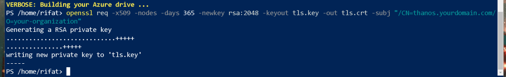
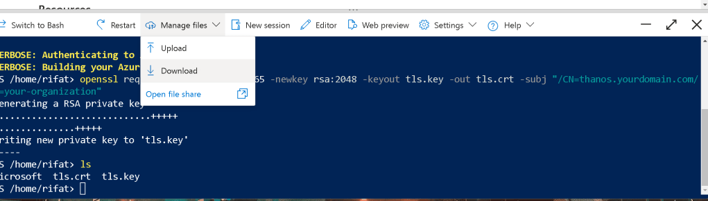
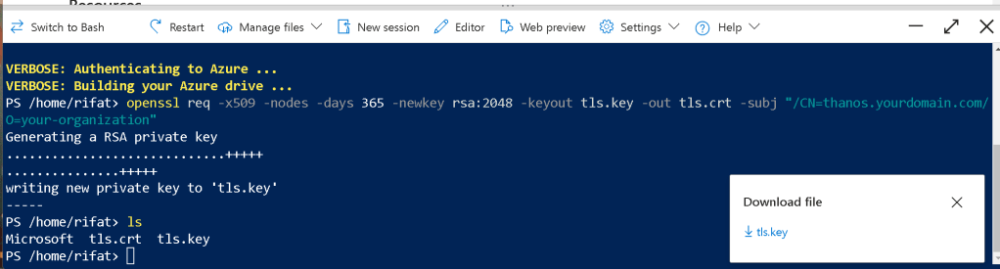

🚀 Implement SSL/TLS Certificates for Thanos Receiver & Prometheus Using Bitnami Helm Charts
Securing your Kubernetes setup with SSL/TLS certificates is essential for encrypted communication and security. This guide will walk you through using local certificate creation to implement SSL/TLS certificates for Thanos Receiver and Prometheus using the Bitnami Helm charts.
🛠️ Step 1: Create Self-Signed SSL Certificates Locally
💻 Generate the Certificates
First, let's create self-signed certificates locally using OpenSSL. Here's how you can generate them:
openssl req -x509 -nodes -days 365 -newkey rsa:2048 -keyout tls.key -out tls.crt -subj "/CN=thanos.yourdomain.com/O=your-organization"
Try it in Azure

This command will generate two files:
-
tls.key: The private key for the certificate. -
tls.crt: The public certificate.
🚀 Screenshot Pause: After generating the certificates, take a screenshot of the terminal showing both tls.key and tls.crt files.
🛠️ Step 2: Create a Kubernetes Secret for the Certificates
Now that we have the certificates, we'll create a Kubernetes Secret to store them.
kubectl create secret tls thanos-prometheus-tls-secret \
--cert=tls.crt --key=tls.key \
--namespace
This secret will be used by both Thanos Receiver and Prometheus to enable TLS.
🚀 Screenshot Pause: Take a screenshot showing the creation of the Kubernetes secret in your terminal.
🛠️ Step 3: Update Bitnami Helm Charts to Use the Certificates
💡 Thanos Receiver Setup
- Install the Bitnami Thanos Receiver with the TLS configuration:
helm repo add bitnami https://charts.bitnami.com/bitnami
helm install thanos-receiver bitnami/thanos \
--set service.tls.enabled=true \
--set service.tls.secretName=thanos-prometheus-tls-secret \
--namespace
💡 Prometheus Setup
- Similarly, install Prometheus with TLS enabled:
helm install prometheus bitnami/prometheus \
--set service.tls.enabled=true \
--set service.tls.secretName=thanos-prometheus-tls-secret \
--namespace
This ensures that both Thanos and Prometheus are now secured with your locally generated SSL certificates.
🚀 Screenshot Pause: Capture the output of helm install to show that the installations were successful with the TLS configuration.
🛠️ Step 4: Verify SSL/TLS Configuration
To ensure the certificates are working correctly, check the status of the services.
kubectl describe svc
Make sure to look for the TLS configuration in the service description.
🚀 Screenshot Pause: Show the output from the service description, verifying the TLS settings.
🚀 Step 5: Test the HTTPS Connection
Now that everything is set up, test accessing the Thanos Receiver and Prometheus over HTTPS. Use your browser or a tool like curl:
curl -k https://thanos.yourdomain.com
curl -k https://prometheus.yourdomain.com
You should see a valid response from both services, indicating that SSL/TLS is correctly configured.
🚀 Screenshot Pause: Display a successful curl response, showing the secure HTTPS connection.
🎉 Success! You've Set Up TLS for Thanos & Prometheus Locally!
By following these steps, you've successfully set up self-signed SSL/TLS certificates for Thanos Receiver and Prometheus using Bitnami Helm charts. This ensures secure communication between your services in the Kubernetes cluster.
🔗 Connect with me:
-
💼 LinkedIn: https://www.linkedin.com/in/rifaterdemsahin/
-
🐦 Twitter: https://x.com/rifaterdemsahin
-
🎥 YouTube: https://www.youtube.com/@RifatErdemSahin
-
💻 GitHub: https://github.com/rifaterdemsahin
👨💻 Happy Kubernetes Securing! Let me know if you have any questions or need further assistance!
Yes, the command you provided should work on Windows if you have OpenSSL installed. However, you will need to ensure the following prerequisites:
-
OpenSSL is installed: OpenSSL is not installed by default on Windows. You can download and install OpenSSL from here, or use a package manager like chocolatey to install it using
choco install openssl. -
Set OpenSSL in your environment's PATH: After installation, ensure that OpenSSL is available in your system's PATH, so the
opensslcommand can be executed from any terminal.
The command will generate two files:
-
tls.key: The private key. -
tls.crt: The self-signed certificate.
Command Breakdown:
-
openssl req: Start a certificate request. -
-x509: This option outputs a self-signed certificate instead of a certificate request. -
-nodes: No DES (i.e., do not encrypt the private key). -
-days 365: Set the certificate to be valid for 365 days. -
-newkey rsa:2048: Generate a new RSA key with a size of 2048 bits. -
-keyout tls.key: Specify the file to write the private key to. -
-out tls.crt: Specify the file to write the certificate to. -
-subj "/CN=thanos.yourdomain.com/O=your-organization": Provide the certificate details such as the common name (CN) and organization (O).
Considerations:
-
Make sure the
CN(Common Name) matches the domain where you intend to use the certificate. -
If you plan to use this certificate in a production environment, it would be better to use certificates from a trusted certificate authority (CA) instead of self-signing.
If OpenSSL is correctly installed and configured on your Windows machine, this command should run without issues.
Yes, you can run the openssl command in Azure Cloud Shell, but there are a few things to consider:
-
Azure Cloud Shell supports OpenSSL: Both Bash and PowerShell environments in Azure Cloud Shell have OpenSSL pre-installed. So you can directly use the
opensslcommand without any additional setup. -
Command usage: The command you provided should work as is in Azure Cloud Shell, similar to how it would on a local Linux or Windows environment. The Cloud Shell environment behaves like a standard Linux shell (even in PowerShell mode), so the syntax and behavior of OpenSSL will be the same.
How to run the command:
-
Open Azure Cloud Shell:
-
Log in to your Azure portal.
-
Click the Cloud Shell icon at the top-right corner.
-
Choose Bash or PowerShell:
-
Choose the environment you're comfortable with. Bash is more commonly used for OpenSSL commands.
-
Run your OpenSSL command:
-
You can directly paste and run your command:
bash openssl req -x509 -nodes -days 365 -newkey rsa:2048 -keyout tls.key -out tls.crt -subj "/CN=thanos.yourdomain.com/O=your-organization" -
Access generated files:
-
Once the certificate and key are generated (
tls.crtandtls.key), they will be available in your Cloud Shell file system. You can download them or use them for other Azure services like Kubernetes or Web Apps.
Additional Notes:
-
You can store these files in your Azure storage account or download them using the Cloud Shell file transfer feature (upload/download buttons in the Cloud Shell UI).
-
If you're using the certificates for services like AKS (Azure Kubernetes Service), Azure Web Apps, or Azure App Gateway, you can upload them directly from Cloud Shell.
Azure Cloud Shell is a very convenient way to run commands like these without worrying about local OpenSSL setup!
To download the files that were generated (tls.key and tls.crt) from the Azure CLI environment to your local system, you can follow these steps:
1. Locate the Files:
First, ensure that the files are in the correct directory. If you're still in the same directory where the files were generated, they should be listed as in your screenshot (e.g., tls.key and tls.crt).
2. Download via Azure CLI using SCP:
If your Azure environment has SSH access, you can use scp (secure copy protocol) to transfer the files to your local machine. Here’s an example command structure you can use:
scp username@azure-vm-ip:/path/to/tls.key /local/path/to/download/tls.key
scp username@azure-vm-ip:/path/to/tls.crt /local/path/to/download/tls.crt
Replace the following:
-
username: Your Azure VM username. -
azure-vm-ip: The public IP of the Azure VM where the files were generated. -
/path/to/: Adjust this path to where you want to download the files on your local system.
3. Use File Transfer Tools:
You can also use tools like WinSCP (on Windows) or FileZilla (on any platform) to transfer files over SCP/SFTP if you're on a VM or have SSH access enabled.
4. Azure Blob Storage (Optional):
Another option is to upload the files to an Azure Blob storage account and then download them from there:
-
Install
azcopyif it's not installed already. -
Use
azcopyto copy the files to a blob storage container. Example:
azcopy copy "/path/to/tls.key" "https://
5. Manual File Upload (Optional):
If the Azure CLI you're using allows, you could upload the files to a storage account directly using the portal interface and then download them.
Let me know which option you prefer, and I can guide you further!


Imported from rifaterdemsahin.com · 2024